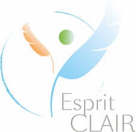
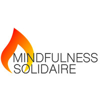

Présentation générale des activités
Je propose 3 programmes basés sur la pleine conscience : MBSR (réduction du stress), ESPRIT CLAIR (méditation et émotions), MINDFULNESS SOLIDAIRE (pleine conscience et travail social).
J’ai choisi de me former et de m’entourer de professionnels experts en leurs domaines, de m’inscrire dans la lignée de ces organismes et de m'engager à leurs cotés afin de participer d’une démarche éthique et coopérative qui me tient à cœur. Comme dit le dicton, seul on va plus vite, ensemble on va plus loin.
Comme dit le dicton, seul on va plus vite, ensemble on va plus loin.
Je pense que le monde d’aujourd’hui et de demain a besoin de la force de la coopération, de collectifs à la fois résilients et innovants afin de réinventer le vivre ensemble et de mieux vivre avec soi, avec les autres, avec l’environnement. L’engagement social, résilient et écologique est la fondation de mes projets.
Le programme MBSR (Mindfulness Based Stress Reduction) est idéal pour débuter et approfondir la pratique de la méditation de pleine conscience et établir des habitudes de méditation. Il permet d’améliorer la qualité de vie et d’installer des rapports plus harmonieux avec soi-même, avec les autres, soi et avec l’environnement. Il permet d’apprendre à accueillir pas à pas la souffrance, l’inconfort et de cultiver tous les états d’être bénéfiques déjà présent ici et maintenant.
 Le programme ESPRIT CLAIR est un programme d’initiation à la méditation de pleine conscience allié à des apports des thérapies cognitivo comportementales de 3eme vague (centrées sur les émotions). Il est un excellent moyen de s’initier à la pleine conscience et d’ouvrir un chemin thérapeutique.
Il est centré sur les émotions et permet d’apprendre à mieux les accueillir, les accepter, les nommer, les utiliser. L'un des objectids du programme est aussi de cheminer vers une vie qui a plus de sens et de cohérence en ajustant les valeurs qui nous sont propres avec nos actions de la vie quotidienne.
Le programme MINDFULNESS SOLIDAIRE se destine plus particulièrement aux structures sociales et médico-sociales afin d’accompagner leurs usagers et les professionnels qui y travaillent.
Il s’agit d’un programme basé sur la pleine conscience et l'intelligence émotionnelle. Pour moi c’est l’outil idéal pour lier l’engagement social et la pratique de la pleine conscience.
Ce programme est une proposition pour ouvrir un chemin de transformation et de paix interieure.
Pour les personnes qui le souhaitent je propose aussi des protocoles individualisés visant des objectifs spécifiques, toujours basés sur la pleine conscience.
Je propose également des ateliers d’initiations et/ou conférences pour les structures qui me sollicitent afin de présenter la pratique de la pleine conscience en général ou dans des contextes particuliers.